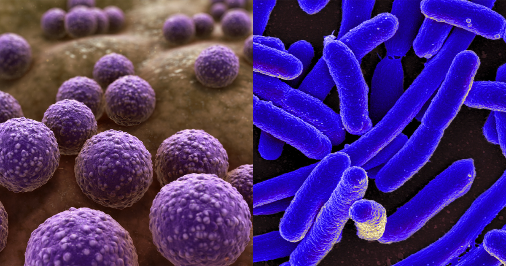
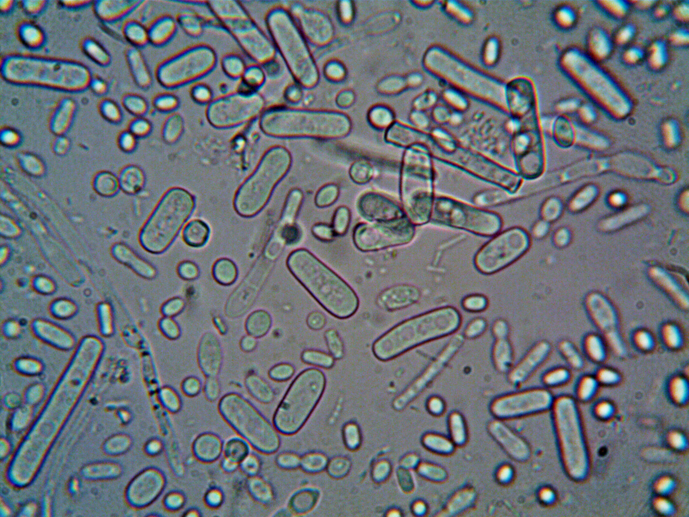
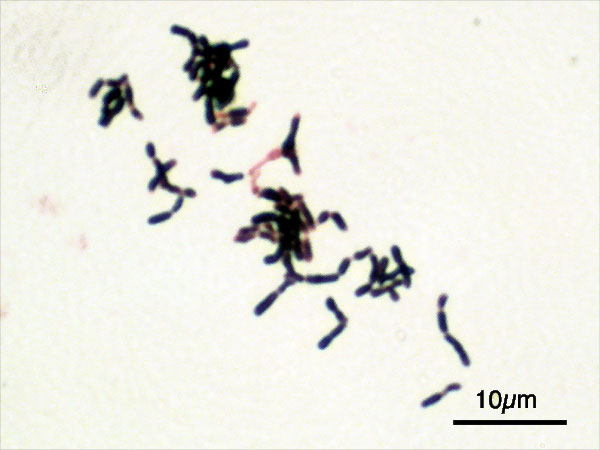
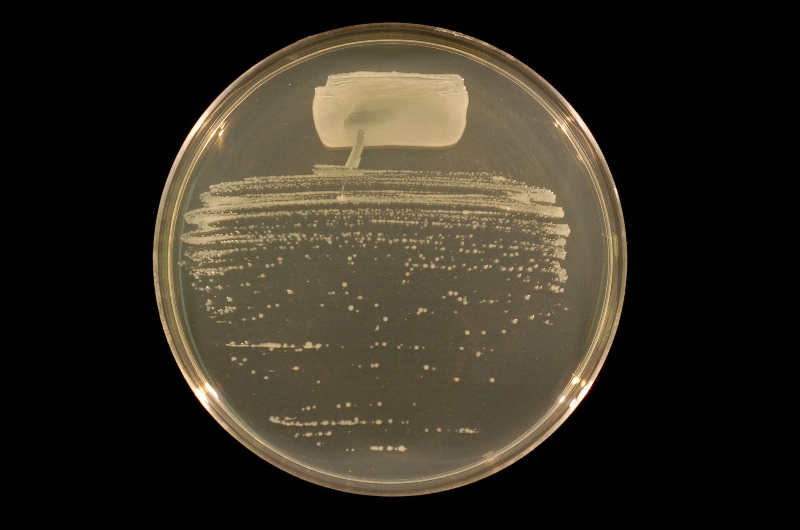
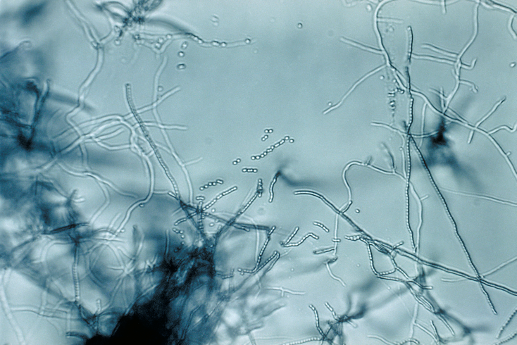
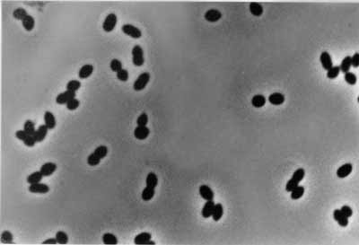

O que são e como vivem as Bactérias Benéficas?

Fotos: Scientific Animations; NIAID/Wikimedia Commons
O que são?
São organismos vivos de uma única célula (procariontes) que mantêm uma relação de parceria com o ambiente ou com outros seres vivos. Ao contrário dos germes que causam doenças, elas trazem proteção e nutrientes essenciais.
Como vivem?
Elas podem viver sozinhas ou em colônias mega organizadas chamadas biofilmes (verdadeiras cidades microscópicas coladas em superfícies). Algumas precisam de oxigênio para respirar, enquanto outras vivem em ambientes sem ar nenhum, gerando energia através da fermentação.
Onde são encontradas?
As bactérias benéficas estão presentes em quase todos os ambientes: no nosso intestino (formando a microbiota intestinal), na pele, no solo fértil onde os alimentos são cultivados, nos oceanos e até no ar. Elas desempenham funções importantes para a saúde e para o equilíbrio dos ecossistemas.
- Algumas bactérias benéficas são chamadas de probióticos, definidos como "microrganismos vivos que, quando administrados em quantidades adequadas, conferem benefícios à saúde do indivíduo"
Conheça as Super-Bactérias do Bem
Lactobalicius

Fonte da Imagem, Acesso em: 12 jul. 2026
Transformam o açúcar do leite em ácido lático, processo conhecido como fermentação básica. São as grandes responsáveis pelo iogurte e pelo queijo. Além disso, os lactobacilos fazem parte da microbiota intestinal humana, onde ajudam a manter o equilíbrio das bactérias do intestino, dificultando a proliferação de microrganismos causadores de doenças.
Bifidobacterium

Fonte: Wikipedia Commons, Acesso em: 12 jul. 2026
{kind=link}
são bactérias benéficas que estão entre os primeiros microrganismos a colonizar o intestino dos bebês. Elas colonizam o intestino humano logo após o nascimento e produzem ácidos orgânicos, como o ácido lático e o ácido acético, que ajudam a reduzir o crescimento de microrganismos prejudiciais.
Rhizobium

Fonte: Wikipedia Commons, Acesso em: 12 jul. 2026
{kind=link}
Moram nas raízes de plantas como feijão e soja, elas se alojam em pequenas estruturas chamadas nódulos radiculares, e, então, elas capturam o nitrogênio do ar e entregam para a planta em forma de alimento, funcionando como um fertilizante natural.
Streptomyces

Fonte: Wikipedia Commons, Acesso em: 12 jul. 2026
{kind=link}
As heroínas da medicina moderna. Elas são responsáveis pela produção de uma grande variedade de substâncias naturais, incluindo mais de 70% dos antibióticos de origem natural utilizados no tratamento de infecções bacterianas. Medicamentos importantes, como a estreptomicina, a tetraciclina e a eritromicina, foram descobertos graças a bactérias desse gênero.
Nitrosomonas

Fonte: Wikipedia Commons, Acesso em: 12 jul. 2026
{kind=link}
As faxineiras das águas e do solo. Elas quebram a amônia (substância que é altamente tóxica em aquários e plantações) e a transformam em nitrito, um composto menos prejudicial. Em seguida, outras bactérias completam o processo, convertendo o nitrito em nitrato, que pode ser absorvido pelas plantas como nutriente.
Onde elas são usadas no nosso dia a dia?
Industria alimenticia e fermentação.
As bactérias são usadas na produção de iogurtes e queijos. O iogurte, como exemplo, depende principalmente de 2 microrganismos: Streptococcus thermophilus e lactobacillus bulgaricus. No caso do queijo, cada tipo de queijo apresenta uma bactéria diferente em sua produção.
Industria farmaceutica
Algumas bacterias também são utilizadas na produção de fármacos. Exemplos incluem a insulina e antibióticos.
Agente do meio-ambiente
Algumas delas também exergem ação sob o meio-ambiente, como o ciclo do carbono, ciclo do nitrogênio, decomposição de lixo e outras matérias orgânicas.
Corpo humano
Além disso, as bacterias que atuam no nosso sistema digestivo consumem fibras e carboidratos conhecidas como prebióticos, definidos como substratos seletivamente fermentáveis, utilizados pelo hospedeiro, que permitem alterações positivas na composição e na atividade da microbiota intestinal, proporcionando benefícios para a saúde. Também fornecem uma defesa vital contra patógenos invasores.